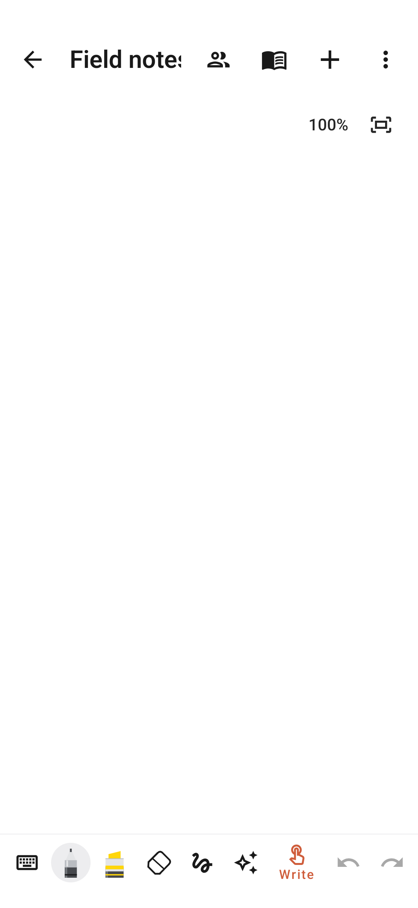
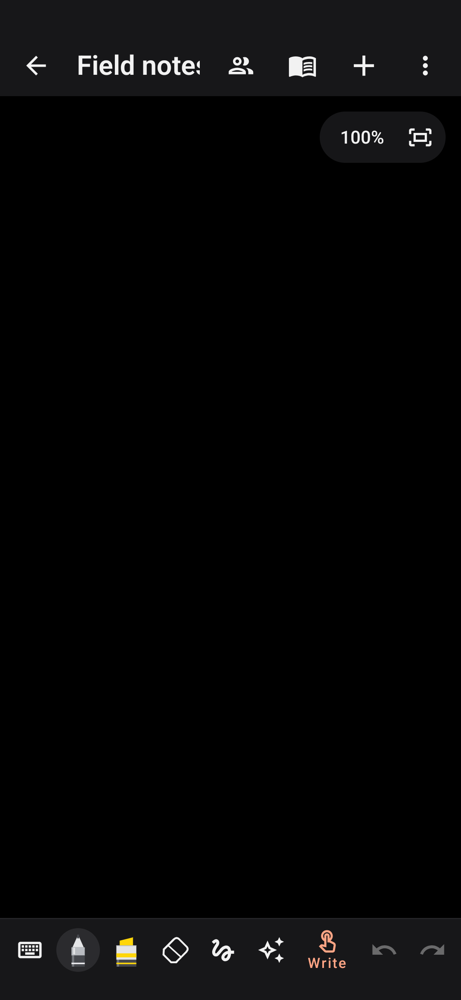
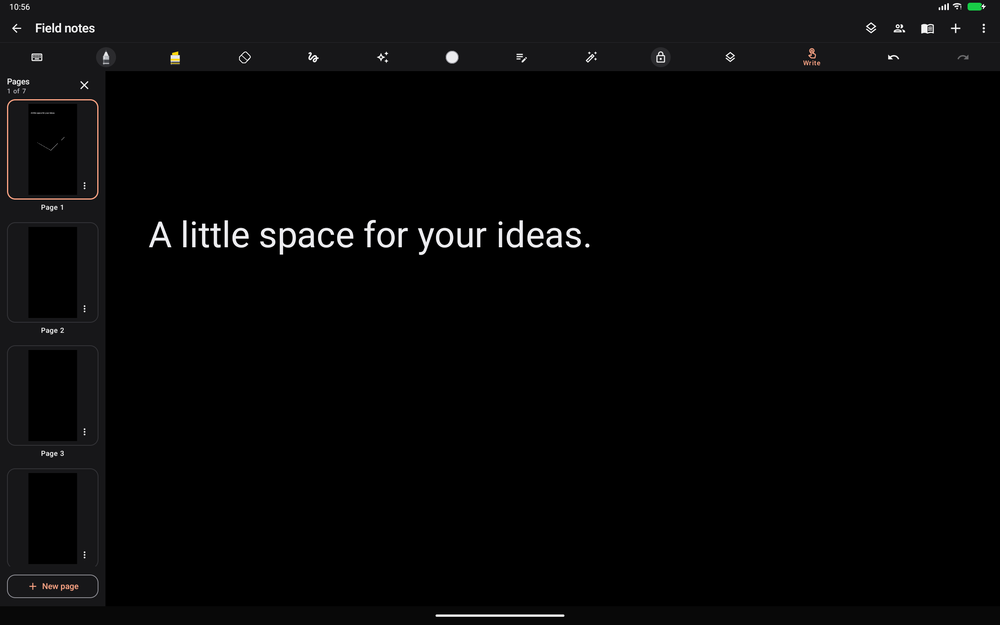

This historical review is superseded by the Drawly 2.2 device and release review.
The previous neutral light and dark colours, matching flat toolbars, simple editable title, circular create-note button and tablet handwriting shortcuts are restored. The updated blue icon with its pale brush handle remains.
Small refinements retained: an explicit Write/Scroll control, a pinned New page button in the tablet sorter, clickable page captions and a stable library heading. Ink keeps its cached geometry across theme changes and new strokes; unchanged library thumbnails remain cached. Collaboration is preserved.
27 focused tests passed on the connected Samsung Galaxy S22 (SM-S901E), Android 16/API 36. These cover raw pointer/palm events, visible ink in both themes, pinch cancellation, new-page pulls, reading mode, momentum, save/reopen, system theme changes, landscape controls and local collaboration. Temporary test notes were purged. The installed Notes Preview was updated without clearing its data; the original app was not replaced. Device night mode and rotation settings match their recorded starting values.



| Area | Checks |
|---|---|
| Ink and navigation | Nib settings, pressure rendering, eraser modes, lasso transforms, undo/redo, palm input events, staggered pinch cancellation, reading mode, momentum and new-page pulls. |
| Documents | Text and ink mode switching, page order and coordinates, reopen/autosave, image crop/rotation, legacy migration, PDF import/export and PNG rendering. |
| Appearance | Matching header/tool row pixels in both themes, visible neutral and coloured ink, system theme changes in an open note, landscape tool access and unobstructed canvas bounds. |
| Collaboration | Local TLS/WebSocket fixtures exercise the real client. Production room traffic is not generated by these tests. |
26 JVM tests passed. An earlier full 61-test Android suite passed on the dedicated x86_64 emulator with 16 KB memory pages. The final full repeat after strengthening the lower-page contrast test passed 60 of 61: SystemThemeTest timed out waiting for the handwriting toolbar after switching from text mode. That test then passed four isolated rechecks; it also passed on the Samsung phone and release variant. The intermittent full-suite timeout remains a reliability concern, not a proven rendering defect. Six release-variant tests passed: note saving/reopening, live system-theme changes, landscape tools and persistence, and three local TLS/WebSocket collaboration workflows. That release APK was signed with the debug key solely for QA; it is not the Google Play artifact. Isolated Compose fixtures use a debug-only host activity and are covered by the debug/device suites instead. Lint: 0 errors, 83 warnings and 3 informational findings. Warnings concern dependencies, unused resources, icon conventions and code style. Release vital lint passed.
The phone run exposed a light-theme assumption in a pixel regression. That check now explicitly verifies ink-to-paper contrast in both light and dark themes after panning and zooming. The original retained renderer passes the corrected phone check; no speculative renderer change was retained.
Version 2.1, version code 27, minimum API 24, compile and target API 36. Release signing reads the existing drawly.jks (default alias drawly) through a local ignored keystore.properties or dedicated environment variables. No new key is generated.
The release APK is non-debuggable and targets API 36. Its APK ZIP alignment check passes at 16 KB; the required 64-bit ELF LOAD segments pass in both the APK and bundle (12 packaged native libraries per artifact). See native alignment evidence and artifact SHA-256 hashes. The bundle is currently unsigned.
To configure signing locally, copy keystore.properties.example to keystore.properties and fill in both passwords. Alternatively set DRAWLY_KEYSTORE_PATH, DRAWLY_KEY_ALIAS, DRAWLY_KEYSTORE_PASSWORD and DRAWLY_KEY_PASSWORD. Do not paste passwords into chat. Then run .\gradlew.bat assembleRelease bundleRelease with Java 17.
The local file has been created at C:\Users\vardh\AndroidStudioProjects\Notepad\keystore.properties, with the existing keystore path and alias filled in. It is ignored by Git. The user must supply both passwords locally before production signing can be verified.
Updated Preview APK: C:\Users\vardh\AndroidStudioProjects\Notepad\app\build\outputs\apk\device-preview\notes-preview.apk. Standard debug APK: C:\Users\vardh\AndroidStudioProjects\Notepad\app\build\outputs\apk\debug\app-debug.apk. Unsigned Play bundle: C:\Users\vardh\AndroidStudioProjects\Notepad\app\build\outputs\bundle\release\app-release.aab.
Evidence logs: build-restored-validated.log, build-restored-final-tests.log (earlier full pass), build-restored-complete-tests.log (final repeat timeout), build-restored-system-recheck.log, build-restored-theme-repeat-1.log through build-restored-theme-repeat-3.log, build-restored-samsung-final.log, build-restored-release-flows.log and build-restored-ui-review.log.
The connected Galaxy S22 has no S Pen digitizer; injected stylus/pressure/palm events exercise the input pipeline but do not measure real S Pen latency. Biometric confirmation, downloaded handwriting recognition models, microphone hardware and all Android/OEM versions require separate coverage where not explicitly recorded above. Passing functional tests does not establish a universal frame rate.
Collaboration currently syncs ink and canvas state. Text, images, PDFs and audio do not sync; concurrent whole-canvas updates use last-writer behaviour. The live server deployment and Google Play Console configuration, privacy disclosures, upload certificate and pre-launch report remain outside these local tests.
References: Google Play target API requirements, Android 16 KB compatibility, Android app signing.